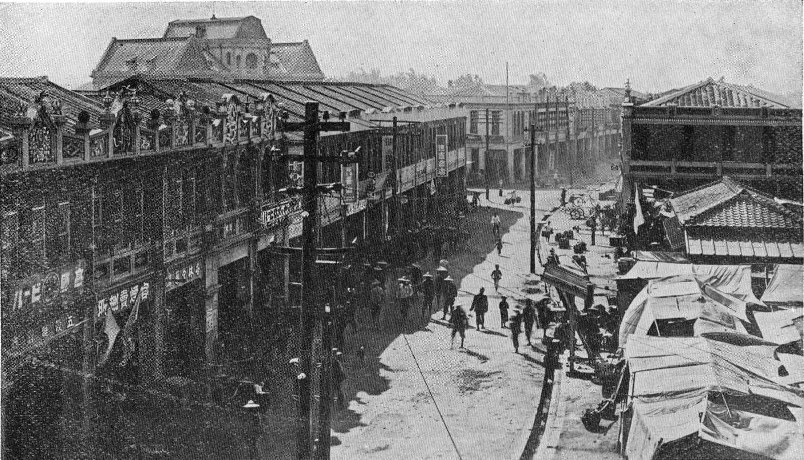
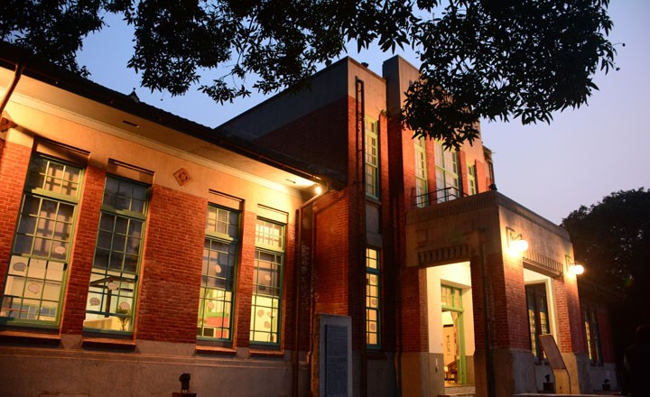

— 行啟紀念館 —

—
原名斗六記念公館，因日治大正十二年（西元一九二三年）至二十七日，
日本皇太子裕仁來臺巡幸。三年後，裕仁即位天皇，年號「昭和」。
斗六地區民眾為紀念裕仁來臺並至斗六，乃集資興建此一公共建築。
原為純磚造建築，部份空間曾被改為鋼筋混凝土造，整個建築物之外觀與格局仍保持相當完整。
本建築於九二一地震中產生嚴重震害，主要的承重磚牆有明顯的開裂與錯動，
屋架也因蟲蛀與開裂，於民國九十五年十二月完成修復。原訂名斗六國有財產局雲林辦公廳舍，
民國95年7月18日正名為斗六行啟記念館。
— 雲中街 —

—
雲中街生活聚落和台南的藍曬圖文創園區一樣，是利用建於昭和12年日治時代留下的舊警察宿舍群改建而成，改造之後變得相當有質感。雲中街舊警察宿舍始建於1920年代，於戰後移交作為警察宿舍之用，因此有後來的稱呼。原宿舍群全盛時期有六排房宿，低矮的日式建築擁有寬敞的前後院及側院，依職務階級來分配不同坪數。建物結構為日式木造建築，外觀屋頂使用黑瓦或水泥瓦，內部結構有編竹泥牆，圍牆則是使用空心磚砌成，具有日式宿舍建築共通特性。